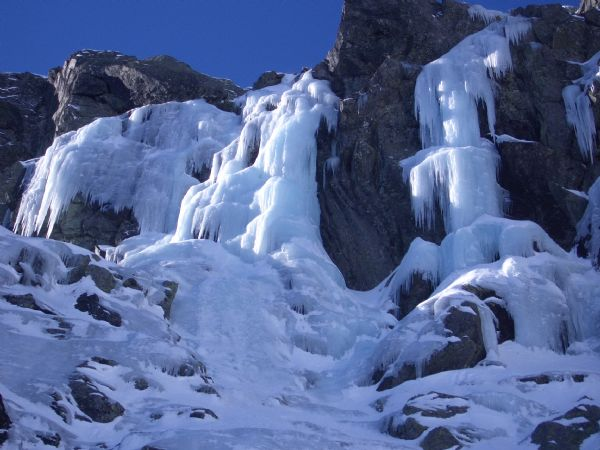
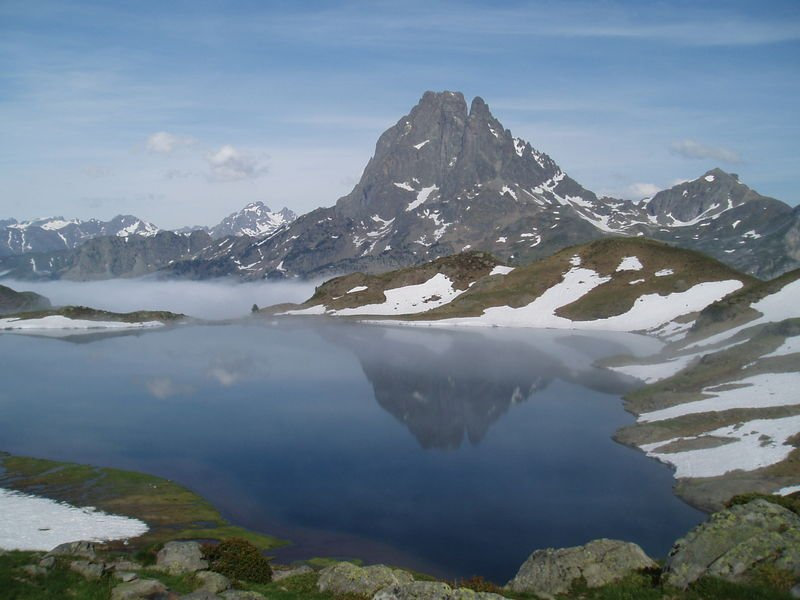
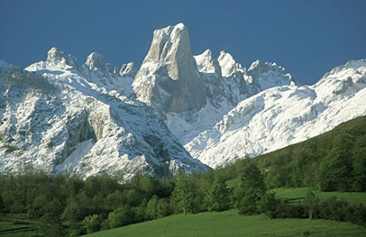

Sierra de Gredos. La sierra de Gredos es una sierra de España perteneciente al Sistema Central, situada entre las provincias de Ávila, Cáceres, Madrid y Toledo. Su máxima altitud se da en la provincia de Ávila en la Plaza del Moro Almanzor a 2.592 m,divide los términos municipales de Zapardiel de la Ribera y Candeleda. Está declarada parque regional. Gredos es una de las sierras más extensas del Sistema Central y está compuesta por cinco valles fluviales: Alto Tormes, Alt0o Alberche, Tiétar Oriental, Tiétar Occidental y la Vera, y Valle del Ambroz.
Los Pirineos, o el Pirineo Pirineos.como prefieren denominar sus habitantes al referirse a una parte o región de éstos (español: Pirineos; francés: Pyrénées; catalán: Pirineus; occitano: Pirenèus; aragonés: Perineus; euskera: Pirinioak o Auñamendiak), son una cordillera montañosa situada al norte de la Península Ibérica, entre España, Andorra y Francia. Se extiende a lo largo de 415 km desde el mar Mediterráneo (cabo de Creus, golfo de Rosas) al este, hasta el mar Cantábrico (cabo Higuer, golfo de Vizcaya) al oeste. En su parte central tiene una anchura de unos 150 km.
Picos de Europa.Macizo montañoso localizado en el norte de España que pertenece a la parte central de la cordillera Cantábrica. Aunque no muy extenso, su cercanía al mar hace que sea pródiga en accidentes geográficos de gran interés. Esta formación caliza se extiende por Asturias, Cantabria y León y en ella destacan sus alturas, en muchos casos por encima de los 2.500 metros, por lo cerca que se encuentran del mar Cantábrico, pues en su punto más septentrional apenas se distancian 15 kilómetros del mar. Geográficamente los Picos de Europa se encuentran en la línea de la Cordillera Cantábrica, si bien son considerados como una unidad independiente de ésta por su formación más reciente. Ocupan una superficie total de 64.600 hectáreas repartidas entre las tres provincias.